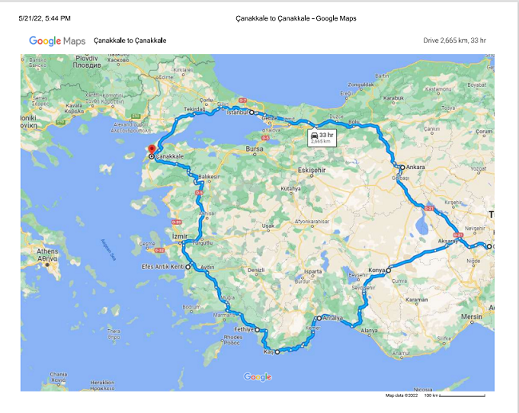

10-DAY MEDITERRANEAN ROAD TRIP, TURKEY*Contains how I plan International Trips and my Visualization Itinerary.* |
For my first coding project, I did know what to do and I thought to myself, what better than an itinerary or something related to travel? And so, here I am enthusiastically typing to share some of my experiences and tips which I’m sure
will come
handy when you do decide to take the trip. It’s an amazing feeling to see something you make come to live! You can also find a tentative itinerary for Turkey which is already in our pipeline. Any one interested? I am very excited about this.
I
hope I complete this project. And I hope you find it informative, if I do complete it and it gets to see the light of day.
A word of warning! If you do not have a friend like me, don't leave the planning to your friends. One, you'll miss out on some of the things you thought should have been in the itinerary (bugs you the remainder of the trip). Second, you'll spend unnecessarily on the things you did not plan to or enjoy. You will lose time and money and a big portion of your mind(true story of my first international trip which was a surprise from Harshuwa). He's forgiven or is he?😁
The matter of the fact is, no one knows what you truly want and what makes you happy more than you, yourself and with many other countries to cover in your lifetime(assuming you just started exploring just like me), I say, do it yourself! If it goes wrong, it goes wrong. I bet it will still beat the holiday packages sold online and some itinerary made by your friend. So, don't be lazy or think that it's not your "forte". I can guarantee you that it's not easy but it is simple.
Just to put it out there, I do not own any of the images that I've used here except for the first map image. I used google images uploaded by several people whom I do not know. Please contact for removal/credit otherwise thank you very much!
We travel for food. And the beauty of the country and culture exploration of course but mostly for food. I travel with 2 men-boys almost all the trips. You will continue to see me mentioning them in future unless they cross the unthinkable line and I stop talking to them 😂 or I stop blogging. I think, the last one is the most viable reason because I get bored very easily. Anyway, we go where I say we go. I am a lucky gal and very grateful to my boys, Shubham and Harshuwa. I do not thank them enough in person because I take them for granted(*laughs like Dr. Jackal from Shaktimaan*). It’s only fair because they take me for granted as well with regards to so many other at home activities. They know I’m grateful.
I choose Turkey for the next trip because it is cheap and we can eat whatever the hell we want without having to worry about the budget. We had a hard time in Dubai. Everything was so freaking expensive. Not in Turkey. We’ve checked it all and food is cheeeeap! Turkey is going to be a food-gasm trip for sure.
Simple Guides to plan International Trips can help you plan your international trips in few simple steps. I hope you find it informative. You can follow the same for national travels minus the Visa headache.
|  | |
|
This map is a tentative travel route starting from istanbul with a detour to Pamukkale Thermal Spa round it and back to Istanbul for a flight back to Bangalore. |
Alternatively access the map live here. Click on the marked location for quick facts. |
This is what I plan at the moment. It may change slightly. TURKEY has so much to offer. The food, the lanscapes, the vibrant culture of two continents(Asia & Europe) in one city, Istanbul, the ruins of Byzantine, Ottoman and Roman empires, perfect to re-live your history class. Literally a living-breathing ground of pre-historic and historic civilisations. Explore the streets and food of Istanbul, treat yourself to Turkish breakfast. Explore the historical ancient coastal ruins and monuments, get a thermal spa, relax on the beautiful beaches of Fathiye and Kas. Explore sunken city, cafe hopping in Antalya and marina hang outs, hike up to the highest peak of Cappadocia, go on horse rides and sunset & balloon landing watching at the cave rooftop. And many more. Meet new people if you like, not so much for me but I gaurantee I can be nice about it.
Check my 10-day Mediterranean Road Trip
, Turkey Itinerary. If you like it, leave a message for me. If you don't like it, I'll still like to hear from you. 💗